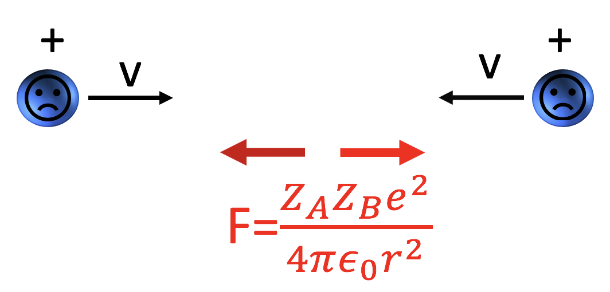

Forrige side🙂 🙁FusjonPADLET

Her ser vi to protoner (hydrogenkjerner) som er på vei mot hverandre i full fart. Men vil de kunne fusjonere? I midten ser vi Coulombkraften. Den blir jo sterkere og sterkere jo nærmere de kommer og går mot uendelig sterk når r → 0. Så hvordan får vi til fusjon i det hele tatt? Vil ikke Coulombkrafta stoppe ethvert forsøk? Tenk deg godt om før du går videre, hvordan kommer protonene nær hverandre så de kan fusjonere? Hmmmmm.....jeg har tenkt godt etter...